Code::Blocks使用教程（使用Code::Blocks编写C语言程序）
前面我们给出了一段完整的 C 语言代码，就是在显示器上输出 “C语言中文网”，如下所示：
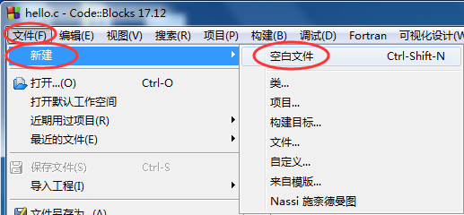
或者直接按下
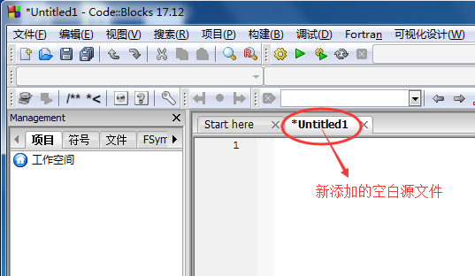
在空白源文件中输入本文开头的代码：
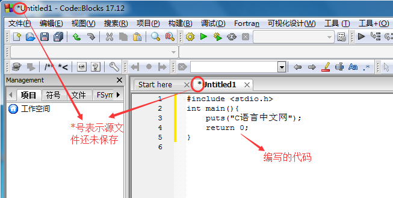
在上方菜单栏中选择 “文件 -->保存文件”，或者按下
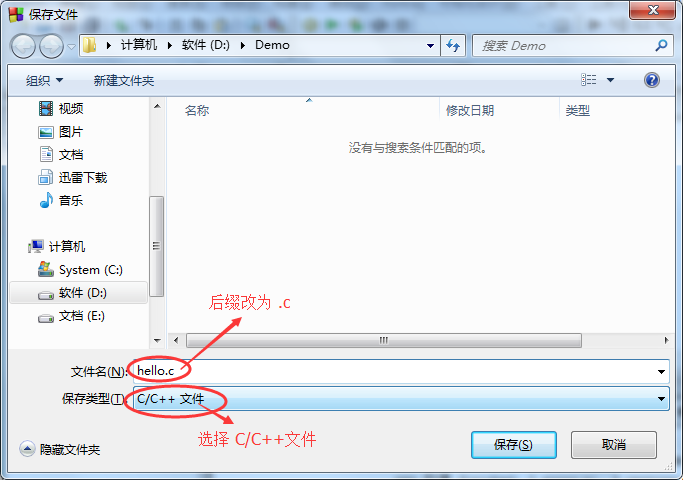
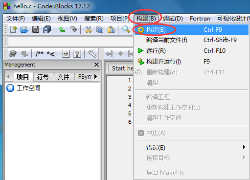
或者直接按
如果代码没有错误，CodeBlocks 会在下方的 “构建信息” 窗口中看到编译成功的提示，如下图所示：
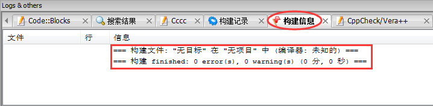
编译完成后，打开源文件所在的目录（本教程是 D:\Demo\），会看到多了两个文件：
对上面的代码稍作修改，让程序输出 “C语言中文网”后暂停下来：
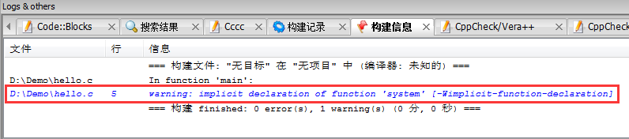
再次编译、运行生成的 hello.exe ，终于如愿以偿，看到输出结果，如下图所示：
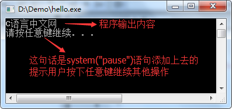
按下键盘上的任意一个键，程序就会关闭。
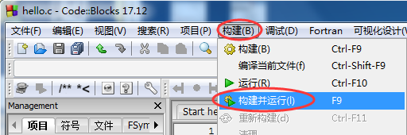
或者直接按下
删除上面代码中的 “system(“pause”)” 语句，按下
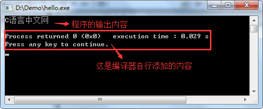
在本教程的基础部分，教大家编写的程序都是这样的“黑窗口”，与我们平时使用的软件不同，它们没有漂亮的界面，没有复杂的功能，只能看到一些文字，这就是控制台程序（Console Application），它与 DOS 非常相似，早期的计算机程序都是这样的。
控制台程序虽然看起来枯燥无趣，但是它非常简单，适合入门，能够让大家学会编程的基本知识；只有夯实基本功，才能开发出健壮的GUI（Graphical User Interface，图形用户界面）程序，也就是带界面的程序。
#include <stdio.h>
int main(){
puts("C语言中文网");
return 0;
}
本节，我们就来看看如何通过 CodeBlocks 来运行这段代码。
CodeBlocks 完全支持单个源文件的编译，如果你的程序只有一个源文件(初学者基本上都是在单个源文件下编写代码)，那么不用创建项目，直接运行即可；如果有多个源文件，才需要创建项目。
1) 新建源文件
打开 CodeBlocks ，在上方菜单栏中选择 “文件 --> 新建 --> 空白文件”，如下图所示：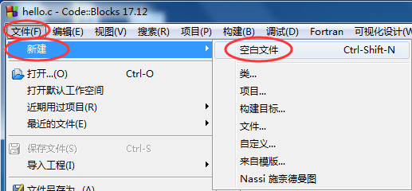
Ctrl + Shift + N 组合键，都会新建一个空白的源文件，如下图所示：
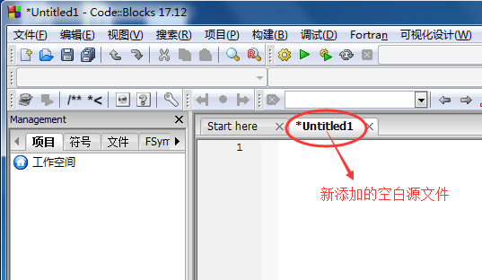
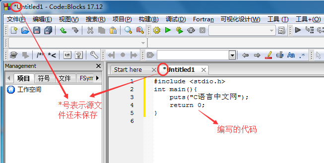
Ctrl + S 组合键，都可以保存源文件，如下图所示。
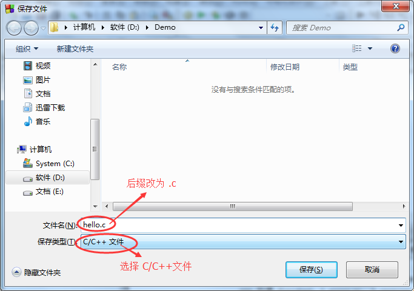
注意：保存时，将源文件后缀名改为 .c。
2) 生成可执行程序
在上方菜单栏中选择 构建 --> 构建，就可以完成 hello.c 的编译工作。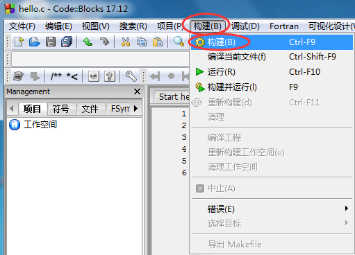
Ctrl + F9 组合键，也能够完成编译工作，这样更加便捷。如果代码没有错误，CodeBlocks 会在下方的 “构建信息” 窗口中看到编译成功的提示，如下图所示：
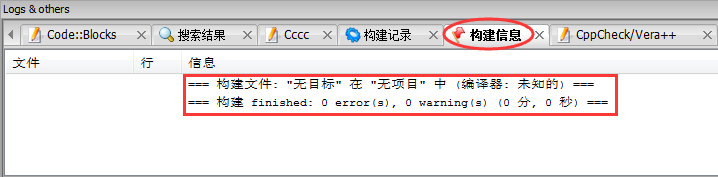
- hello.o 文件：这是编译过程产生的中间文件，这种中间文件的专业称呼是目标文件（Object File）。
- hello.exe 文件：是我们最终需要的可执行文件。CodeBlocks 在编译过程就会生成此文件，以便在运行时直接调用此文件。
这说明，CodeBlocks 在编译阶段整合了 ”编译+链接” 的过程。
双击 hello.exe 运行，并没有看到 “C语言中文”几个字，而是会看到一个边框一闪而过。这是因为，程序输出 “C语言中文网” 后就运行结束了，窗口会自动关闭，时间非常短暂，所以看不到输出结果，只能看到一个 ”边框” 一闪而过。对上面的代码稍作修改，让程序输出 “C语言中文网”后暂停下来：
#include<stdio.h>
#include<stdlib.h>
int main(){
puts("C语言中文网");
system("pause");
return 0;
}
system("pause"); 语句的作用就是让程序暂停一下。注意开头部分还添加了 #include<stdlib.h> 语句，否则当你重新编译时，构建信息窗口会提示有关 system函数的警告，如下图所示：
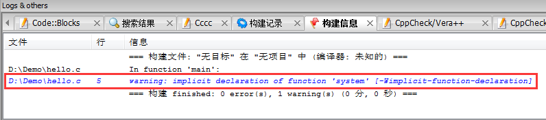
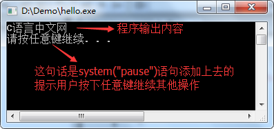
更加快捷的方式
实际开发中我们一般使用菜单中的”构建 --> 构建并运行”选项：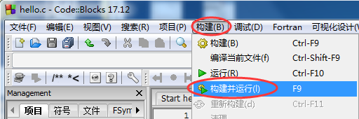
F9 键，这样能够一键完成 “编译 --> 链接 --> 运行”的全过程。这样做的好处是，编译器会让程序自动暂停，我们也不用再添加 “system(“pause”)” 语句啦。删除上面代码中的 “system(“pause”)” 语句，按下
F9 再次运行程序，结果如下：
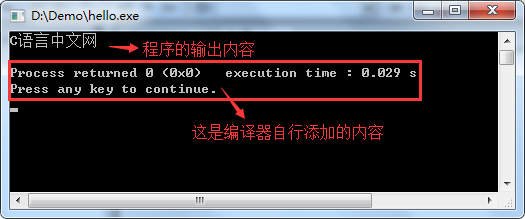
3) 总结
现在，你就可以将 hello.exe 分享给你的朋友了，告诉他们这是你编写的第一个C语言程序。虽然这个程序非常简单，但是你已经越过了第一道障碍，学会了如何编写代码，如何将代码生成可执行程序，这是一个完整的体验。在本教程的基础部分，教大家编写的程序都是这样的“黑窗口”，与我们平时使用的软件不同，它们没有漂亮的界面，没有复杂的功能，只能看到一些文字，这就是控制台程序（Console Application），它与 DOS 非常相似，早期的计算机程序都是这样的。
控制台程序虽然看起来枯燥无趣，但是它非常简单，适合入门，能够让大家学会编程的基本知识；只有夯实基本功，才能开发出健壮的GUI（Graphical User Interface，图形用户界面）程序，也就是带界面的程序。
关注公众号「站长严长生」，在手机上阅读所有教程，随时随地都能学习。内含一款搜索神器，免费下载全网书籍和视频。

微信扫码关注公众号